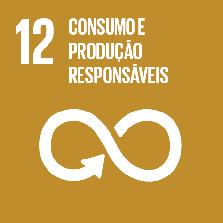

O que é?
A economia circular é um modelo de produçao e consumo que envolve reutilizaçao, recuperaçao e reciclagem.

Um novo modelo sustentavel para o planeta
A economia circular é um modelo de produçao e consumo que envolve reutilizaçao, recuperaçao e reciclagem.